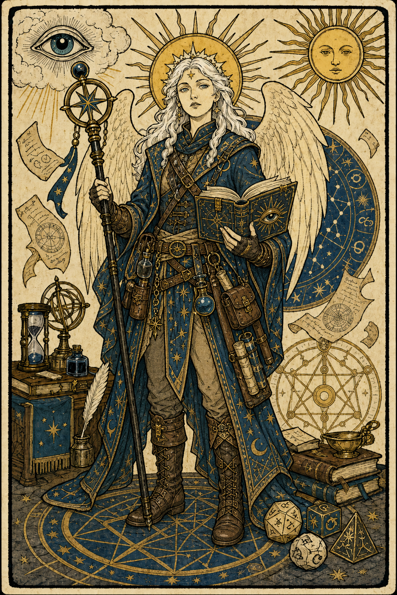

Zazpoh the Matyr
Aasimar / Wizard (Divination) / Level 5
Edit OverviewEdit
Edit AbilitiesEdit
Edit CombatEdit
Weapon Attacks
Edit Combat StatsEdit
Edit HealthEdit
Edit AbilitiesEdit
Saving Throws
Skills
Class Features
Arcane Recovery Wizard / Level 1 / Triggered
You have learned to regain some of your magical energy by studying your spellbook. Once per day when you finish a short rest, you can choose expended spell slots to recover. The spell slots can have a combined level that is equal to or less than half your wizard level (rounded up), and none of the slots can be 6th level or higher. For example, if you're a 4th-level wizard, you can recover up to two levels worth of spell slots. You can recover either a 2nd-level spell slot or two 1st-level spell slots.
Spellcasting Wizard / Level 1 / Triggered
As a student of arcane magic, you have a spellbook containing spells that show the first glimmerings of your true power. See chapter 10 for the general rules of spellcasting and chapter 11 for the wizard spell list. Cantrips: At 1st level, you know three cantrips of your choice from the wizard spell list. You learn additional wizard cantrips of your choice at higher levels, as shown in the Cantrips Known column of the Wizard table. Spellbook: At 1st level, you have a spellbook containing six 1st-level wizard spells of your choice. Your spellbook is the repository of the wizard spells you know, except your cantrips, which are fixed in your mind. Preparing and Casting Spells: The Wizard table shows how many spell slots you have to cast your wizard spells of 1st level and higher. To cast one of these spells, you must expend a slot of the spell's level or higher. You regain all expended spell slots when you finish a long rest. You prepare the list of wizard spells that are available for you to cast. To do so, choose a number of wizard spells from your spellbook equal to your Intelligence modifier + your wizard level (minimum of one spell). The spells must be of a level for which you have spell slots. For example, if you're a 3rd-level wizard, you have four 1st-level and two 2nd-level spell slots. With an Intelligence of 16, your list of prepared spells can include six spells of 1st or 2nd level, in any combination, chosen from your spellbook. If you prepare the 1st-level spell magic missile, you can cast it using a 1st-level or a 2nd-level slot. Casting the spell doesn't remove it from your list of prepared spells. You can change your list of prepared spells when you finish a long rest. Preparing a new list of wizard spells requires time spent studying your spellbook and memorizing the incantations and gestures you must make to cast the spell: at least 1 minute per spell level for each spell on your list. Spellcasting Ability: Intelligence is your spellcasting ability for your wizard spells, since you learn your wizard spells through dedicated study and memorization. You use your Intelligence whenever a spell refers to your spellcasting ability. In addition, you use your Intelligence modifier when setting the saving throw DC for a wizard spell you cast and when making an attack roll with one. Spell: Spell: Ritual Casting: You can cast a wizard spell as a ritual if that spell has the ritual tag and you have the spell in your spellbook. You don't need to have the spell prepared. Spellcasting Focus: You can use an arcane focus as a spellcasting focus for your wizard spells. Learning Spells of 1st Level and Higher: Each time you gain a wizard level, you can add two wizard spells of your choice to your spellbook. Each of these spells must be of a level for which you have spell slots, as shown on the Wizard table. On your adventures, you might find other spells that you can add to your spellbook (see "Your Spellbook"). Your Spellbook: The spells that you add to your spellbook as you gain levels reflect the arcane research you conduct on your own, as well as intellectual breakthroughs you have had about the nature of the multiverse. You might find other spells during your adventures. You could discover a spell recorded on a scroll in an evil wizard's chest, for example, or in a dusty tome in an ancient library. A spellbook doesn't contain cantrips. Copying a Spell into the Book: When you find a wizard spell of 1st level or higher, you can add it to your spellbook if it is of a spell level you can prepare and if you can spare the time to decipher and copy it. Copying a spell into your spellbook involves reproducing the basic form of the spell, then deciphering the unique system of notation used by the wizard who wrote it. You must practice the spell until you understand the sounds or gestures required, then transcribe it into your spellbook using your own notation. For each level of the spell, the process takes 2 hours and costs 50 gp. The cost represents material components you expend as you experiment with the spell to master it, as well as the fine inks you need to record it. Once you have spent this time and money, you can prepare the spell just like your other spells. Copying from a Spell Scroll: A wizard spell on a spell scroll can be copied just as spells in spellbooks can be copied. When you copy a spell from a spell scroll, you must succeed on an Intelligence (Arcana) check with a DC equal to 10 + the spell's level. If the check succeeds, the spell is successfully copied. Whether the check succeeds or fails, the spell scroll is destroyed. Replacing the Book: You can copy a spell from your own spellbook into another book—for example, if you want to make a backup copy of your spellbook. This is just like copying a new spell into your spellbook, but faster and easier, since you understand your own notation and already know how to cast the spell. You need spend only 1 hour and 10 gp for each level of the copied spell. If you lose your spellbook, you can use the same procedure to transcribe the spells that you have prepared into a new spellbook. Filling out the remainder of your spellbook requires you to find new spells to do so, as normal. For this reason, many wizards keep backup spellbooks in a safe place. The Book's Appearance: Your spellbook is a unique compilation of spells, with its own decorative flourishes and margin notes. It might be a plain, functional leather volume that you received as a gift from your master, a finely bound gilt-edged tome you found in an ancient library, or even a loose collection of notes scrounged together after you lost your previous spellbook in a mishap.
Arcane Tradition Wizard / Level 2 / Triggered
When you reach 2nd level, you choose an arcane tradition from the list of available traditions, shaping your practice of magic. Your choice grants you features at 2nd level and again at 6th, 10th, and 14th level.
Divination Savant Divination / Level 2 / Triggered
Beginning when you select this school at 2nd level, the gold and time you must spend to copy a divination spell into your spellbook is halved.
Portent Divination / Level 2 / Triggered / Portent
Starting at 2nd level when you choose this school, glimpses of the future begin to press in on your awareness. When you finish a long rest, roll two d20s and record the numbers rolled. You can replace any attack roll, saving throw, or ability check made by you or a creature that you can see with one of these foretelling rolls. You must choose to do so before the roll, and you can replace a roll in this way only once per turn. Each foretelling roll can be used only once. When you finish a long rest, you lose any unused foretelling rolls.
School of Divination Divination / Level 2 / Passive
The counsel of a diviner is sought by royalty and commoners alike, for all seek a clearer understanding of the past, present, and future. As a diviner, you strive to part the veils of space, time, and consciousness so that you can see clearly. You work to master spells of discernment, remote viewing, supernatural knowledge, and foresight.
Cantrip Formulas Wizard / Level 3 / Triggered
3rd-level wizard optional class features You have scribed a set of arcane formulas in your spellbook that you can use to formulate a cantrip in your mind. Whenever you finish a long rest and consult those formulas in your spellbook, you can replace one wizard cantrip you know with another cantrip from the wizard spell list.
Ability Score Improvement Wizard / Level 4 / Triggered
When you reach 4th level, you can increase one ability score of your choice by 2, or you can increase two ability scores of your choice by 1. As normal, you can't increase an ability score above 20 using this feature. If your DM allows the use of feats, you may instead take a feat.
Sheet Feature Notes
No extra class features recorded.